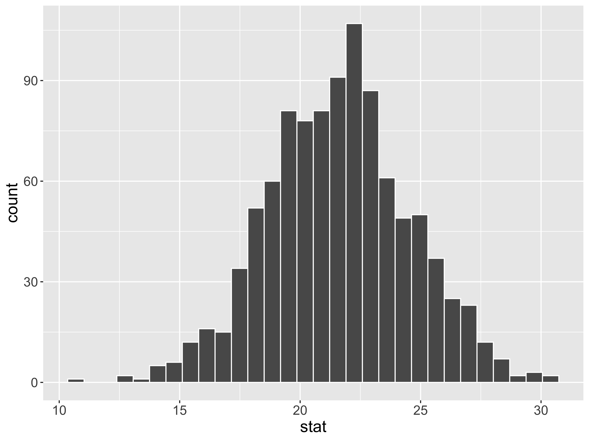
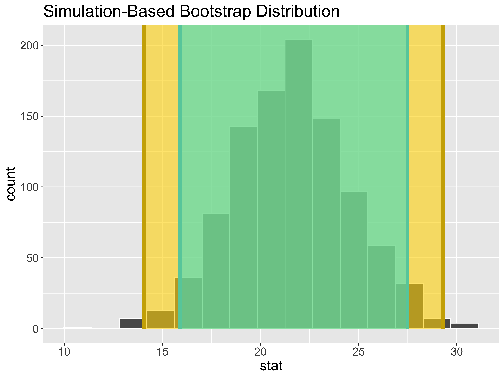
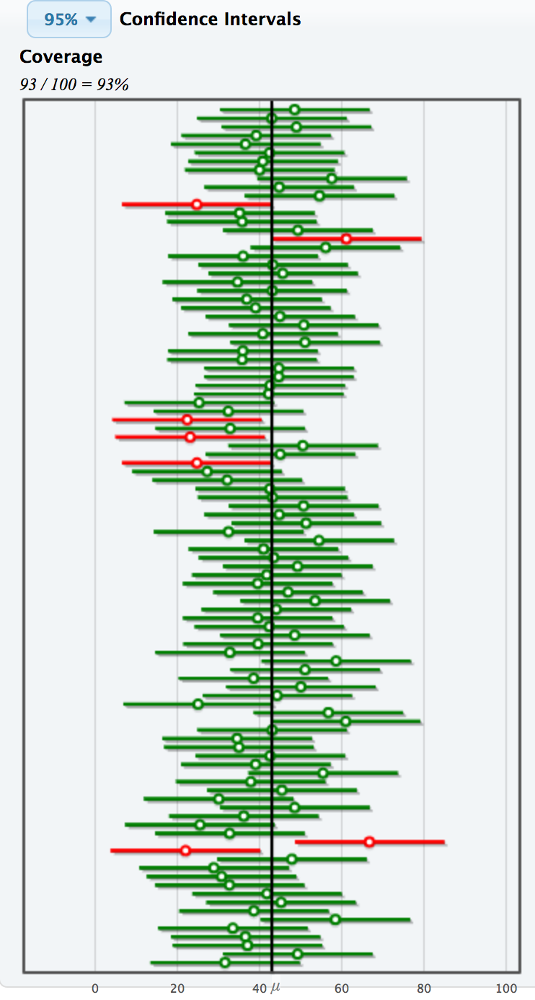
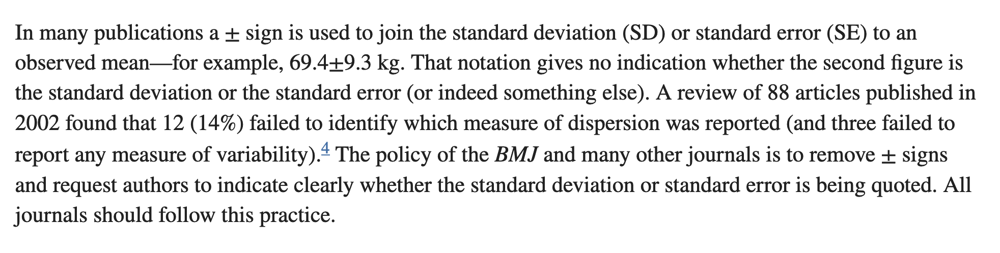
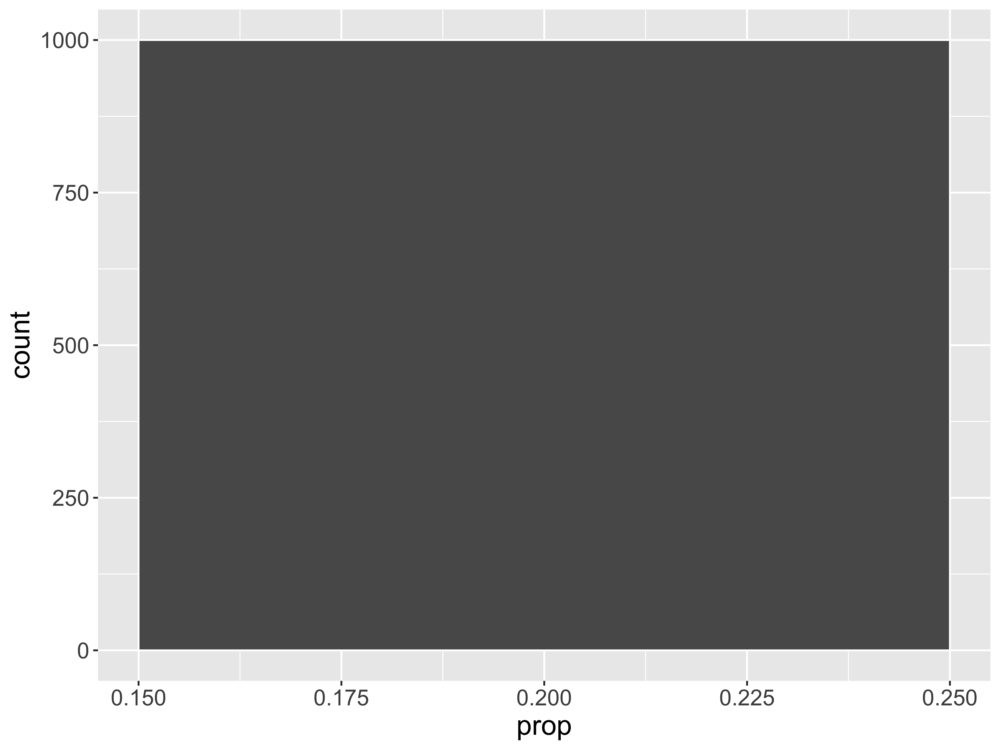
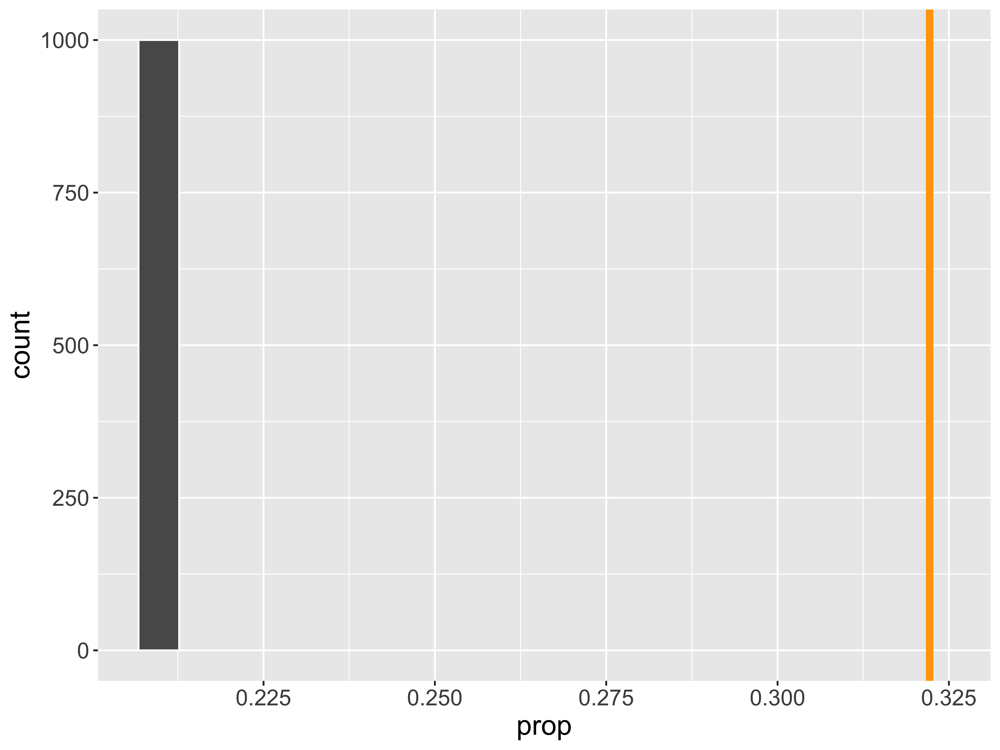
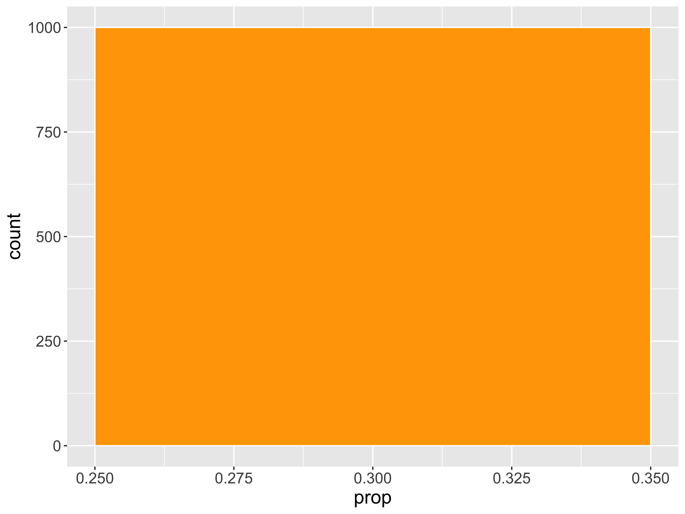
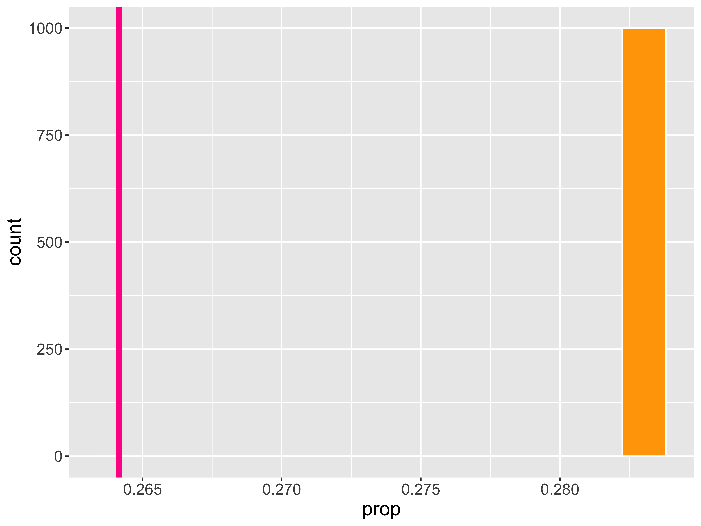
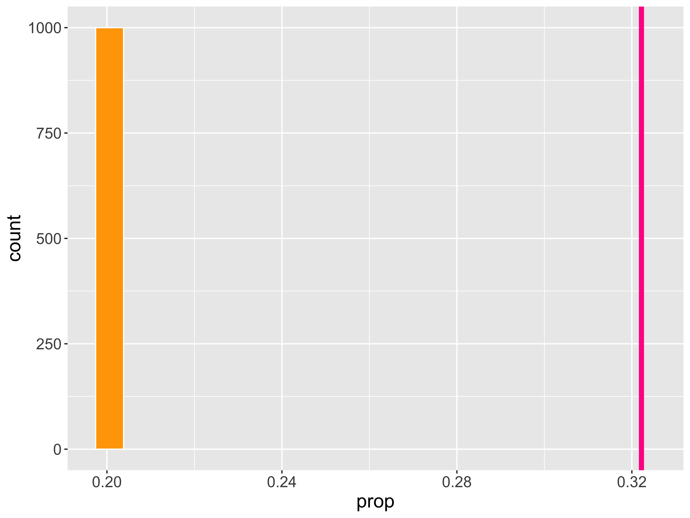

Hypothesis Testing
Kelly McConville
DATA 100
Week 9 | Spring 2026
Announcements
- Map making in
Rworkshop: Part of the Sustainability Symposium- Th, March 26, 2:30 - 3:50pm, Taylor 210
Goals for Today
- More examples of confidence intervals in
R - Confidence interval interpretations
- Set-up the structure of hypothesis testing
- Determine if Bucknell students have ESP!
Load Packages and Data
Let’s return to the movies dataset and estimate numerical quantities about Hollywood movies.
Estimation for a Single Mean
What is the average amount of money \((\mu)\) made in the opening weekend?
Estimation for a Single Mean
set.seed(999)
# Construct bootstrap distribution
bootstrap_dist <- movies %>%
drop_na(OpeningWeekend) %>%
specify(response = OpeningWeekend) %>%
generate(reps = 1000, type = "bootstrap") %>%
calculate(stat = "mean")
# Look at bootstrap distribution
ggplot(data = bootstrap_dist,
mapping = aes(x = stat)) +
geom_histogram(color = "white")
Estimation for a Single Mean – SE Method
# A tibble: 1 × 2
lower_ci upper_ci
<dbl> <dbl>
1 19.0 22.2Interpretation: The point estimate is $ 20.6M. I am 95% confidence that the average amount of money made by all Hollywood movies is between $ 19.0243721M and $ 22.2M.
Estimation for a Single Mean
Estimation for a Single Mean – Percentile Method
Estimation for Difference in Means
What is the difference in average amount of money made in the opening weekend between action movies and dramas \((\mu_1 - \mu_2)\)?
Response: OpeningWeekend (numeric)
Explanatory: Genre (factor)
# A tibble: 1 × 1
stat
<dbl>
1 21.7- Why a difference in means?
Estimation for Difference in Means
# Construct bootstrap distribution
bootstrap_dist <- movies %>%
drop_na(OpeningWeekend) %>%
filter(Genre %in% c("Drama", "Action")) %>%
specify(OpeningWeekend ~ Genre) %>%
generate(reps = 1000, type = "bootstrap") %>%
calculate(stat = "diff in means",
order = c("Action", "Drama"))
# Look at bootstrap distribution
ggplot(data = bootstrap_dist,
mapping = aes(x = stat)) +
geom_histogram(color = "white")
Estimation for Difference in Means – SE Method
# A tibble: 1 × 2
lower_ci upper_ci
<dbl> <dbl>
1 15.9 27.5Interpretation: The point estimate is $ 21.7M. I am 95% confidence that action movies make, on average, between $ 15.9M and $ 27.5M more than dramas.
Comparing CIs

- Why construct a 95% CI versus a 99% CI?

What do we mean by confidence?
Confidence level = success rate of the method under repeated sampling
How do I know if my ONE CI successfully contains the true value of the parameter?
As we increase the confidence level, what happens to the width of the interval?
As we increase the sample size, what happens to the width of the interval?
As we increase the number of bootstrap samples we take, what happens to the width of the interval?
Interpreting Confidence Intervals
Example: Estimating average household income before taxes in the US
SE Method Formula:
\[ \mbox{statistic} \pm{\mbox{ME}} \]
# A tibble: 1 × 3
ME lower upper
<dbl> <dbl> <dbl>
1 1963. 60517. 64443.“The margin of [sampling] error can be described as the ‘penalty’ in precision for not talking to everyone in a given population. It describes the range that an answer likely falls between if the survey had reached everyone in a population, instead of just a sample of that population.” – Courtney Kennedy, Director of Survey Research at Pew Research Center
CI = interval of plausible values for the parameter
Safe interpretation: I am P% confident that {insert what the parameter represents in context} is between {insert lower bound} and {insert upper bound}.
Caution: Intervals in the wild
Statement in an article for The BMJ (British Medical Journal):

Statistical Inference

Goal: Draw conclusions about the population based on a sample.
Main Flavors:
- Estimating numerical quantities.
- Testing conjectures.
Example: Does Extrasensory Perception (ESP) exist?
Bem and Honorton conducted extrasensory perception studies:
- A “sender” randomly chooses an object out of 4 possible objects and sends that information to a “receiver”.
- The “receiver” is then given a set of 4 possible objects and they must decide which one most resembles the object sent to them.
Out of 329 trials, the “receivers” correctly identified the object 106 times.
ESP Example
Let’s consider the following questions:
If ESP does not exist and the “receivers” are guessing, how often would we expect them to be correct?
For each sample (set of 329 trials), do we expect the proportion of correct guesses to be equal? Why or why not?
Is it possible to randomly guess correctly 106 out of 329 times (i.e., 32% of the time)?
How unusual is it to guess correctly 106 out of 329 times if ESP doesn’t exist?
To help us answer d., we need a sampling distribution for the sample proportion where we assume the “receivers” were purely guessing!
Sampling Distribution of a Statistic
Steps for (Approximate) Distribution:
Decide on a sample size, \(n\).
Randomly select a sample of size \(n\) from the population.
Compute the sample statistic.
Put the sample back in.
Repeat Steps (2) - (4) many (1000+) times.

Sampling Distribution Under No ESP
Steps for (Approximate) Distribution:
Decide on a sample size, \(n\).
Randomly select a sample of size \(n\) from the population.
Flipping 329 coins [ Prob(Heads) = 0.25 ] ...
T T H T H T T T H H T H H T T T T H H T H H H T H H H H T T H T H T T T
T H T T T T T T T T T T H T T H T H H T T H T T H H H T T T T T T T T H
H T T T H T T H H H T T T T T T T T T H T T T T H H T T T H T T T T H T
T H T H T T H H T T T T H T T H T T T T T H T T T T H T T H T H H H T T
H T T T T T T T T T H H T T T T T H H T T T T T T H T T T H T T T H T T
T H T T H T H T T T T T H T T T H T T T T H T H T T H H H T H T T T T T
T T T T T H T T T T H T T T T T T T T T T T T T H T T T H T T T T H T H
T T T H T T T T T T T T T T T H T H T T T T T T T T T T T H T T H H T T
T T T T H T T H T T H T H T T T T T T T T T T T H T T T T H T T T T T T
T H T T T
Number of Heads: 87 [Proportion Heads: 0.264437689969605]Sampling Distribution Under No ESP
- Compute the sample statistic.
Put the sample back in.
Repeat Steps (2) - (4) many (1000+) times.
n heads tails prop
1 329 69 260 0.2097264
2 329 69 260 0.2097264
3 329 69 260 0.2097264
4 329 69 260 0.2097264
5 329 69 260 0.2097264
6 329 69 260 0.2097264
7 329 69 260 0.2097264
8 329 69 260 0.2097264
9 329 69 260 0.2097264
10 329 69 260 0.2097264
11 329 69 260 0.2097264
12 329 69 260 0.2097264
13 329 69 260 0.2097264
14 329 69 260 0.2097264
15 329 69 260 0.2097264
16 329 69 260 0.2097264
17 329 69 260 0.2097264
18 329 69 260 0.2097264
19 329 69 260 0.2097264
20 329 69 260 0.2097264
21 329 69 260 0.2097264
22 329 69 260 0.2097264
23 329 69 260 0.2097264
24 329 69 260 0.2097264
25 329 69 260 0.2097264
26 329 69 260 0.2097264
27 329 69 260 0.2097264
28 329 69 260 0.2097264
29 329 69 260 0.2097264
30 329 69 260 0.2097264
31 329 69 260 0.2097264
32 329 69 260 0.2097264
33 329 69 260 0.2097264
34 329 69 260 0.2097264
35 329 69 260 0.2097264
36 329 69 260 0.2097264
37 329 69 260 0.2097264
38 329 69 260 0.2097264
39 329 69 260 0.2097264
40 329 69 260 0.2097264
41 329 69 260 0.2097264
42 329 69 260 0.2097264
43 329 69 260 0.2097264
44 329 69 260 0.2097264
45 329 69 260 0.2097264
46 329 69 260 0.2097264
47 329 69 260 0.2097264
48 329 69 260 0.2097264
49 329 69 260 0.2097264
50 329 69 260 0.2097264
51 329 69 260 0.2097264
52 329 69 260 0.2097264
53 329 69 260 0.2097264
54 329 69 260 0.2097264
55 329 69 260 0.2097264
56 329 69 260 0.2097264
57 329 69 260 0.2097264
58 329 69 260 0.2097264
59 329 69 260 0.2097264
60 329 69 260 0.2097264
61 329 69 260 0.2097264
62 329 69 260 0.2097264
63 329 69 260 0.2097264
64 329 69 260 0.2097264
65 329 69 260 0.2097264
66 329 69 260 0.2097264
67 329 69 260 0.2097264
68 329 69 260 0.2097264
69 329 69 260 0.2097264
70 329 69 260 0.2097264
71 329 69 260 0.2097264
72 329 69 260 0.2097264
73 329 69 260 0.2097264
74 329 69 260 0.2097264
75 329 69 260 0.2097264
76 329 69 260 0.2097264
77 329 69 260 0.2097264
78 329 69 260 0.2097264
79 329 69 260 0.2097264
80 329 69 260 0.2097264
81 329 69 260 0.2097264
82 329 69 260 0.2097264
83 329 69 260 0.2097264
84 329 69 260 0.2097264
85 329 69 260 0.2097264
86 329 69 260 0.2097264
87 329 69 260 0.2097264
88 329 69 260 0.2097264
89 329 69 260 0.2097264
90 329 69 260 0.2097264
91 329 69 260 0.2097264
92 329 69 260 0.2097264
93 329 69 260 0.2097264
94 329 69 260 0.2097264
95 329 69 260 0.2097264
96 329 69 260 0.2097264
97 329 69 260 0.2097264
98 329 69 260 0.2097264
99 329 69 260 0.2097264
100 329 69 260 0.2097264
101 329 69 260 0.2097264
102 329 69 260 0.2097264
103 329 69 260 0.2097264
104 329 69 260 0.2097264
105 329 69 260 0.2097264
106 329 69 260 0.2097264
107 329 69 260 0.2097264
108 329 69 260 0.2097264
109 329 69 260 0.2097264
110 329 69 260 0.2097264
111 329 69 260 0.2097264
112 329 69 260 0.2097264
113 329 69 260 0.2097264
114 329 69 260 0.2097264
115 329 69 260 0.2097264
116 329 69 260 0.2097264
117 329 69 260 0.2097264
118 329 69 260 0.2097264
119 329 69 260 0.2097264
120 329 69 260 0.2097264
121 329 69 260 0.2097264
122 329 69 260 0.2097264
123 329 69 260 0.2097264
124 329 69 260 0.2097264
125 329 69 260 0.2097264
126 329 69 260 0.2097264
127 329 69 260 0.2097264
128 329 69 260 0.2097264
129 329 69 260 0.2097264
130 329 69 260 0.2097264
131 329 69 260 0.2097264
132 329 69 260 0.2097264
133 329 69 260 0.2097264
134 329 69 260 0.2097264
135 329 69 260 0.2097264
136 329 69 260 0.2097264
137 329 69 260 0.2097264
138 329 69 260 0.2097264
139 329 69 260 0.2097264
140 329 69 260 0.2097264
141 329 69 260 0.2097264
142 329 69 260 0.2097264
143 329 69 260 0.2097264
144 329 69 260 0.2097264
145 329 69 260 0.2097264
146 329 69 260 0.2097264
147 329 69 260 0.2097264
148 329 69 260 0.2097264
149 329 69 260 0.2097264
150 329 69 260 0.2097264
151 329 69 260 0.2097264
152 329 69 260 0.2097264
153 329 69 260 0.2097264
154 329 69 260 0.2097264
155 329 69 260 0.2097264
156 329 69 260 0.2097264
157 329 69 260 0.2097264
158 329 69 260 0.2097264
159 329 69 260 0.2097264
160 329 69 260 0.2097264
161 329 69 260 0.2097264
162 329 69 260 0.2097264
163 329 69 260 0.2097264
164 329 69 260 0.2097264
165 329 69 260 0.2097264
166 329 69 260 0.2097264
167 329 69 260 0.2097264
168 329 69 260 0.2097264
169 329 69 260 0.2097264
170 329 69 260 0.2097264
171 329 69 260 0.2097264
172 329 69 260 0.2097264
173 329 69 260 0.2097264
174 329 69 260 0.2097264
175 329 69 260 0.2097264
176 329 69 260 0.2097264
177 329 69 260 0.2097264
178 329 69 260 0.2097264
179 329 69 260 0.2097264
180 329 69 260 0.2097264
181 329 69 260 0.2097264
182 329 69 260 0.2097264
183 329 69 260 0.2097264
184 329 69 260 0.2097264
185 329 69 260 0.2097264
186 329 69 260 0.2097264
187 329 69 260 0.2097264
188 329 69 260 0.2097264
189 329 69 260 0.2097264
190 329 69 260 0.2097264
191 329 69 260 0.2097264
192 329 69 260 0.2097264
193 329 69 260 0.2097264
194 329 69 260 0.2097264
195 329 69 260 0.2097264
196 329 69 260 0.2097264
197 329 69 260 0.2097264
198 329 69 260 0.2097264
199 329 69 260 0.2097264
200 329 69 260 0.2097264
201 329 69 260 0.2097264
202 329 69 260 0.2097264
203 329 69 260 0.2097264
204 329 69 260 0.2097264
205 329 69 260 0.2097264
206 329 69 260 0.2097264
207 329 69 260 0.2097264
208 329 69 260 0.2097264
209 329 69 260 0.2097264
210 329 69 260 0.2097264
211 329 69 260 0.2097264
212 329 69 260 0.2097264
213 329 69 260 0.2097264
214 329 69 260 0.2097264
215 329 69 260 0.2097264
216 329 69 260 0.2097264
217 329 69 260 0.2097264
218 329 69 260 0.2097264
219 329 69 260 0.2097264
220 329 69 260 0.2097264
221 329 69 260 0.2097264
222 329 69 260 0.2097264
223 329 69 260 0.2097264
224 329 69 260 0.2097264
225 329 69 260 0.2097264
226 329 69 260 0.2097264
227 329 69 260 0.2097264
228 329 69 260 0.2097264
229 329 69 260 0.2097264
230 329 69 260 0.2097264
231 329 69 260 0.2097264
232 329 69 260 0.2097264
233 329 69 260 0.2097264
234 329 69 260 0.2097264
235 329 69 260 0.2097264
236 329 69 260 0.2097264
237 329 69 260 0.2097264
238 329 69 260 0.2097264
239 329 69 260 0.2097264
240 329 69 260 0.2097264
241 329 69 260 0.2097264
242 329 69 260 0.2097264
243 329 69 260 0.2097264
244 329 69 260 0.2097264
245 329 69 260 0.2097264
246 329 69 260 0.2097264
247 329 69 260 0.2097264
248 329 69 260 0.2097264
249 329 69 260 0.2097264
250 329 69 260 0.2097264
251 329 69 260 0.2097264
252 329 69 260 0.2097264
253 329 69 260 0.2097264
254 329 69 260 0.2097264
255 329 69 260 0.2097264
256 329 69 260 0.2097264
257 329 69 260 0.2097264
258 329 69 260 0.2097264
259 329 69 260 0.2097264
260 329 69 260 0.2097264
261 329 69 260 0.2097264
262 329 69 260 0.2097264
263 329 69 260 0.2097264
264 329 69 260 0.2097264
265 329 69 260 0.2097264
266 329 69 260 0.2097264
267 329 69 260 0.2097264
268 329 69 260 0.2097264
269 329 69 260 0.2097264
270 329 69 260 0.2097264
271 329 69 260 0.2097264
272 329 69 260 0.2097264
273 329 69 260 0.2097264
274 329 69 260 0.2097264
275 329 69 260 0.2097264
276 329 69 260 0.2097264
277 329 69 260 0.2097264
278 329 69 260 0.2097264
279 329 69 260 0.2097264
280 329 69 260 0.2097264
281 329 69 260 0.2097264
282 329 69 260 0.2097264
283 329 69 260 0.2097264
284 329 69 260 0.2097264
285 329 69 260 0.2097264
286 329 69 260 0.2097264
287 329 69 260 0.2097264
288 329 69 260 0.2097264
289 329 69 260 0.2097264
290 329 69 260 0.2097264
291 329 69 260 0.2097264
292 329 69 260 0.2097264
293 329 69 260 0.2097264
294 329 69 260 0.2097264
295 329 69 260 0.2097264
296 329 69 260 0.2097264
297 329 69 260 0.2097264
298 329 69 260 0.2097264
299 329 69 260 0.2097264
300 329 69 260 0.2097264
301 329 69 260 0.2097264
302 329 69 260 0.2097264
303 329 69 260 0.2097264
304 329 69 260 0.2097264
305 329 69 260 0.2097264
306 329 69 260 0.2097264
307 329 69 260 0.2097264
308 329 69 260 0.2097264
309 329 69 260 0.2097264
310 329 69 260 0.2097264
311 329 69 260 0.2097264
312 329 69 260 0.2097264
313 329 69 260 0.2097264
314 329 69 260 0.2097264
315 329 69 260 0.2097264
316 329 69 260 0.2097264
317 329 69 260 0.2097264
318 329 69 260 0.2097264
319 329 69 260 0.2097264
320 329 69 260 0.2097264
321 329 69 260 0.2097264
322 329 69 260 0.2097264
323 329 69 260 0.2097264
324 329 69 260 0.2097264
325 329 69 260 0.2097264
326 329 69 260 0.2097264
327 329 69 260 0.2097264
328 329 69 260 0.2097264
329 329 69 260 0.2097264
330 329 69 260 0.2097264
331 329 69 260 0.2097264
332 329 69 260 0.2097264
333 329 69 260 0.2097264
334 329 69 260 0.2097264
335 329 69 260 0.2097264
336 329 69 260 0.2097264
337 329 69 260 0.2097264
338 329 69 260 0.2097264
339 329 69 260 0.2097264
340 329 69 260 0.2097264
341 329 69 260 0.2097264
342 329 69 260 0.2097264
343 329 69 260 0.2097264
344 329 69 260 0.2097264
345 329 69 260 0.2097264
346 329 69 260 0.2097264
347 329 69 260 0.2097264
348 329 69 260 0.2097264
349 329 69 260 0.2097264
350 329 69 260 0.2097264
351 329 69 260 0.2097264
352 329 69 260 0.2097264
353 329 69 260 0.2097264
354 329 69 260 0.2097264
355 329 69 260 0.2097264
356 329 69 260 0.2097264
357 329 69 260 0.2097264
358 329 69 260 0.2097264
359 329 69 260 0.2097264
360 329 69 260 0.2097264
361 329 69 260 0.2097264
362 329 69 260 0.2097264
363 329 69 260 0.2097264
364 329 69 260 0.2097264
365 329 69 260 0.2097264
366 329 69 260 0.2097264
367 329 69 260 0.2097264
368 329 69 260 0.2097264
369 329 69 260 0.2097264
370 329 69 260 0.2097264
371 329 69 260 0.2097264
372 329 69 260 0.2097264
373 329 69 260 0.2097264
374 329 69 260 0.2097264
375 329 69 260 0.2097264
376 329 69 260 0.2097264
377 329 69 260 0.2097264
378 329 69 260 0.2097264
379 329 69 260 0.2097264
380 329 69 260 0.2097264
381 329 69 260 0.2097264
382 329 69 260 0.2097264
383 329 69 260 0.2097264
384 329 69 260 0.2097264
385 329 69 260 0.2097264
386 329 69 260 0.2097264
387 329 69 260 0.2097264
388 329 69 260 0.2097264
389 329 69 260 0.2097264
390 329 69 260 0.2097264
391 329 69 260 0.2097264
392 329 69 260 0.2097264
393 329 69 260 0.2097264
394 329 69 260 0.2097264
395 329 69 260 0.2097264
396 329 69 260 0.2097264
397 329 69 260 0.2097264
398 329 69 260 0.2097264
399 329 69 260 0.2097264
400 329 69 260 0.2097264
401 329 69 260 0.2097264
402 329 69 260 0.2097264
403 329 69 260 0.2097264
404 329 69 260 0.2097264
405 329 69 260 0.2097264
406 329 69 260 0.2097264
407 329 69 260 0.2097264
408 329 69 260 0.2097264
409 329 69 260 0.2097264
410 329 69 260 0.2097264
411 329 69 260 0.2097264
412 329 69 260 0.2097264
413 329 69 260 0.2097264
414 329 69 260 0.2097264
415 329 69 260 0.2097264
416 329 69 260 0.2097264
417 329 69 260 0.2097264
418 329 69 260 0.2097264
419 329 69 260 0.2097264
420 329 69 260 0.2097264
421 329 69 260 0.2097264
422 329 69 260 0.2097264
423 329 69 260 0.2097264
424 329 69 260 0.2097264
425 329 69 260 0.2097264
426 329 69 260 0.2097264
427 329 69 260 0.2097264
428 329 69 260 0.2097264
429 329 69 260 0.2097264
430 329 69 260 0.2097264
431 329 69 260 0.2097264
432 329 69 260 0.2097264
433 329 69 260 0.2097264
434 329 69 260 0.2097264
435 329 69 260 0.2097264
436 329 69 260 0.2097264
437 329 69 260 0.2097264
438 329 69 260 0.2097264
439 329 69 260 0.2097264
440 329 69 260 0.2097264
441 329 69 260 0.2097264
442 329 69 260 0.2097264
443 329 69 260 0.2097264
444 329 69 260 0.2097264
445 329 69 260 0.2097264
446 329 69 260 0.2097264
447 329 69 260 0.2097264
448 329 69 260 0.2097264
449 329 69 260 0.2097264
450 329 69 260 0.2097264
451 329 69 260 0.2097264
452 329 69 260 0.2097264
453 329 69 260 0.2097264
454 329 69 260 0.2097264
455 329 69 260 0.2097264
456 329 69 260 0.2097264
457 329 69 260 0.2097264
458 329 69 260 0.2097264
459 329 69 260 0.2097264
460 329 69 260 0.2097264
461 329 69 260 0.2097264
462 329 69 260 0.2097264
463 329 69 260 0.2097264
464 329 69 260 0.2097264
465 329 69 260 0.2097264
466 329 69 260 0.2097264
467 329 69 260 0.2097264
468 329 69 260 0.2097264
469 329 69 260 0.2097264
470 329 69 260 0.2097264
471 329 69 260 0.2097264
472 329 69 260 0.2097264
473 329 69 260 0.2097264
474 329 69 260 0.2097264
475 329 69 260 0.2097264
476 329 69 260 0.2097264
477 329 69 260 0.2097264
478 329 69 260 0.2097264
479 329 69 260 0.2097264
480 329 69 260 0.2097264
481 329 69 260 0.2097264
482 329 69 260 0.2097264
483 329 69 260 0.2097264
484 329 69 260 0.2097264
485 329 69 260 0.2097264
486 329 69 260 0.2097264
487 329 69 260 0.2097264
488 329 69 260 0.2097264
489 329 69 260 0.2097264
490 329 69 260 0.2097264
491 329 69 260 0.2097264
492 329 69 260 0.2097264
493 329 69 260 0.2097264
494 329 69 260 0.2097264
495 329 69 260 0.2097264
496 329 69 260 0.2097264
497 329 69 260 0.2097264
498 329 69 260 0.2097264
499 329 69 260 0.2097264
500 329 69 260 0.2097264
501 329 69 260 0.2097264
502 329 69 260 0.2097264
503 329 69 260 0.2097264
504 329 69 260 0.2097264
505 329 69 260 0.2097264
506 329 69 260 0.2097264
507 329 69 260 0.2097264
508 329 69 260 0.2097264
509 329 69 260 0.2097264
510 329 69 260 0.2097264
511 329 69 260 0.2097264
512 329 69 260 0.2097264
513 329 69 260 0.2097264
514 329 69 260 0.2097264
515 329 69 260 0.2097264
516 329 69 260 0.2097264
517 329 69 260 0.2097264
518 329 69 260 0.2097264
519 329 69 260 0.2097264
520 329 69 260 0.2097264
521 329 69 260 0.2097264
522 329 69 260 0.2097264
523 329 69 260 0.2097264
524 329 69 260 0.2097264
525 329 69 260 0.2097264
526 329 69 260 0.2097264
527 329 69 260 0.2097264
528 329 69 260 0.2097264
529 329 69 260 0.2097264
530 329 69 260 0.2097264
531 329 69 260 0.2097264
532 329 69 260 0.2097264
533 329 69 260 0.2097264
534 329 69 260 0.2097264
535 329 69 260 0.2097264
536 329 69 260 0.2097264
537 329 69 260 0.2097264
538 329 69 260 0.2097264
539 329 69 260 0.2097264
540 329 69 260 0.2097264
541 329 69 260 0.2097264
542 329 69 260 0.2097264
543 329 69 260 0.2097264
544 329 69 260 0.2097264
545 329 69 260 0.2097264
546 329 69 260 0.2097264
547 329 69 260 0.2097264
548 329 69 260 0.2097264
549 329 69 260 0.2097264
550 329 69 260 0.2097264
551 329 69 260 0.2097264
552 329 69 260 0.2097264
553 329 69 260 0.2097264
554 329 69 260 0.2097264
555 329 69 260 0.2097264
556 329 69 260 0.2097264
557 329 69 260 0.2097264
558 329 69 260 0.2097264
559 329 69 260 0.2097264
560 329 69 260 0.2097264
561 329 69 260 0.2097264
562 329 69 260 0.2097264
563 329 69 260 0.2097264
564 329 69 260 0.2097264
565 329 69 260 0.2097264
566 329 69 260 0.2097264
567 329 69 260 0.2097264
568 329 69 260 0.2097264
569 329 69 260 0.2097264
570 329 69 260 0.2097264
571 329 69 260 0.2097264
572 329 69 260 0.2097264
573 329 69 260 0.2097264
574 329 69 260 0.2097264
575 329 69 260 0.2097264
576 329 69 260 0.2097264
577 329 69 260 0.2097264
578 329 69 260 0.2097264
579 329 69 260 0.2097264
580 329 69 260 0.2097264
581 329 69 260 0.2097264
582 329 69 260 0.2097264
583 329 69 260 0.2097264
584 329 69 260 0.2097264
585 329 69 260 0.2097264
586 329 69 260 0.2097264
587 329 69 260 0.2097264
588 329 69 260 0.2097264
589 329 69 260 0.2097264
590 329 69 260 0.2097264
591 329 69 260 0.2097264
592 329 69 260 0.2097264
593 329 69 260 0.2097264
594 329 69 260 0.2097264
595 329 69 260 0.2097264
596 329 69 260 0.2097264
597 329 69 260 0.2097264
598 329 69 260 0.2097264
599 329 69 260 0.2097264
600 329 69 260 0.2097264
601 329 69 260 0.2097264
602 329 69 260 0.2097264
603 329 69 260 0.2097264
604 329 69 260 0.2097264
605 329 69 260 0.2097264
606 329 69 260 0.2097264
607 329 69 260 0.2097264
608 329 69 260 0.2097264
609 329 69 260 0.2097264
610 329 69 260 0.2097264
611 329 69 260 0.2097264
612 329 69 260 0.2097264
613 329 69 260 0.2097264
614 329 69 260 0.2097264
615 329 69 260 0.2097264
616 329 69 260 0.2097264
617 329 69 260 0.2097264
618 329 69 260 0.2097264
619 329 69 260 0.2097264
620 329 69 260 0.2097264
621 329 69 260 0.2097264
622 329 69 260 0.2097264
623 329 69 260 0.2097264
624 329 69 260 0.2097264
625 329 69 260 0.2097264
626 329 69 260 0.2097264
627 329 69 260 0.2097264
628 329 69 260 0.2097264
629 329 69 260 0.2097264
630 329 69 260 0.2097264
631 329 69 260 0.2097264
632 329 69 260 0.2097264
633 329 69 260 0.2097264
634 329 69 260 0.2097264
635 329 69 260 0.2097264
636 329 69 260 0.2097264
637 329 69 260 0.2097264
638 329 69 260 0.2097264
639 329 69 260 0.2097264
640 329 69 260 0.2097264
641 329 69 260 0.2097264
642 329 69 260 0.2097264
643 329 69 260 0.2097264
644 329 69 260 0.2097264
645 329 69 260 0.2097264
646 329 69 260 0.2097264
647 329 69 260 0.2097264
648 329 69 260 0.2097264
649 329 69 260 0.2097264
650 329 69 260 0.2097264
651 329 69 260 0.2097264
652 329 69 260 0.2097264
653 329 69 260 0.2097264
654 329 69 260 0.2097264
655 329 69 260 0.2097264
656 329 69 260 0.2097264
657 329 69 260 0.2097264
658 329 69 260 0.2097264
659 329 69 260 0.2097264
660 329 69 260 0.2097264
661 329 69 260 0.2097264
662 329 69 260 0.2097264
663 329 69 260 0.2097264
664 329 69 260 0.2097264
665 329 69 260 0.2097264
666 329 69 260 0.2097264
667 329 69 260 0.2097264
668 329 69 260 0.2097264
669 329 69 260 0.2097264
670 329 69 260 0.2097264
671 329 69 260 0.2097264
672 329 69 260 0.2097264
673 329 69 260 0.2097264
674 329 69 260 0.2097264
675 329 69 260 0.2097264
676 329 69 260 0.2097264
677 329 69 260 0.2097264
678 329 69 260 0.2097264
679 329 69 260 0.2097264
680 329 69 260 0.2097264
681 329 69 260 0.2097264
682 329 69 260 0.2097264
683 329 69 260 0.2097264
684 329 69 260 0.2097264
685 329 69 260 0.2097264
686 329 69 260 0.2097264
687 329 69 260 0.2097264
688 329 69 260 0.2097264
689 329 69 260 0.2097264
690 329 69 260 0.2097264
691 329 69 260 0.2097264
692 329 69 260 0.2097264
693 329 69 260 0.2097264
694 329 69 260 0.2097264
695 329 69 260 0.2097264
696 329 69 260 0.2097264
697 329 69 260 0.2097264
698 329 69 260 0.2097264
699 329 69 260 0.2097264
700 329 69 260 0.2097264
701 329 69 260 0.2097264
702 329 69 260 0.2097264
703 329 69 260 0.2097264
704 329 69 260 0.2097264
705 329 69 260 0.2097264
706 329 69 260 0.2097264
707 329 69 260 0.2097264
708 329 69 260 0.2097264
709 329 69 260 0.2097264
710 329 69 260 0.2097264
711 329 69 260 0.2097264
712 329 69 260 0.2097264
713 329 69 260 0.2097264
714 329 69 260 0.2097264
715 329 69 260 0.2097264
716 329 69 260 0.2097264
717 329 69 260 0.2097264
718 329 69 260 0.2097264
719 329 69 260 0.2097264
720 329 69 260 0.2097264
721 329 69 260 0.2097264
722 329 69 260 0.2097264
723 329 69 260 0.2097264
724 329 69 260 0.2097264
725 329 69 260 0.2097264
726 329 69 260 0.2097264
727 329 69 260 0.2097264
728 329 69 260 0.2097264
729 329 69 260 0.2097264
730 329 69 260 0.2097264
731 329 69 260 0.2097264
732 329 69 260 0.2097264
733 329 69 260 0.2097264
734 329 69 260 0.2097264
735 329 69 260 0.2097264
736 329 69 260 0.2097264
737 329 69 260 0.2097264
738 329 69 260 0.2097264
739 329 69 260 0.2097264
740 329 69 260 0.2097264
741 329 69 260 0.2097264
742 329 69 260 0.2097264
743 329 69 260 0.2097264
744 329 69 260 0.2097264
745 329 69 260 0.2097264
746 329 69 260 0.2097264
747 329 69 260 0.2097264
748 329 69 260 0.2097264
749 329 69 260 0.2097264
750 329 69 260 0.2097264
751 329 69 260 0.2097264
752 329 69 260 0.2097264
753 329 69 260 0.2097264
754 329 69 260 0.2097264
755 329 69 260 0.2097264
756 329 69 260 0.2097264
757 329 69 260 0.2097264
758 329 69 260 0.2097264
759 329 69 260 0.2097264
760 329 69 260 0.2097264
761 329 69 260 0.2097264
762 329 69 260 0.2097264
763 329 69 260 0.2097264
764 329 69 260 0.2097264
765 329 69 260 0.2097264
766 329 69 260 0.2097264
767 329 69 260 0.2097264
768 329 69 260 0.2097264
769 329 69 260 0.2097264
770 329 69 260 0.2097264
771 329 69 260 0.2097264
772 329 69 260 0.2097264
773 329 69 260 0.2097264
774 329 69 260 0.2097264
775 329 69 260 0.2097264
776 329 69 260 0.2097264
777 329 69 260 0.2097264
778 329 69 260 0.2097264
779 329 69 260 0.2097264
780 329 69 260 0.2097264
781 329 69 260 0.2097264
782 329 69 260 0.2097264
783 329 69 260 0.2097264
784 329 69 260 0.2097264
785 329 69 260 0.2097264
786 329 69 260 0.2097264
787 329 69 260 0.2097264
788 329 69 260 0.2097264
789 329 69 260 0.2097264
790 329 69 260 0.2097264
791 329 69 260 0.2097264
792 329 69 260 0.2097264
793 329 69 260 0.2097264
794 329 69 260 0.2097264
795 329 69 260 0.2097264
796 329 69 260 0.2097264
797 329 69 260 0.2097264
798 329 69 260 0.2097264
799 329 69 260 0.2097264
800 329 69 260 0.2097264
801 329 69 260 0.2097264
802 329 69 260 0.2097264
803 329 69 260 0.2097264
804 329 69 260 0.2097264
805 329 69 260 0.2097264
806 329 69 260 0.2097264
807 329 69 260 0.2097264
808 329 69 260 0.2097264
809 329 69 260 0.2097264
810 329 69 260 0.2097264
811 329 69 260 0.2097264
812 329 69 260 0.2097264
813 329 69 260 0.2097264
814 329 69 260 0.2097264
815 329 69 260 0.2097264
816 329 69 260 0.2097264
817 329 69 260 0.2097264
818 329 69 260 0.2097264
819 329 69 260 0.2097264
820 329 69 260 0.2097264
821 329 69 260 0.2097264
822 329 69 260 0.2097264
823 329 69 260 0.2097264
824 329 69 260 0.2097264
825 329 69 260 0.2097264
826 329 69 260 0.2097264
827 329 69 260 0.2097264
828 329 69 260 0.2097264
829 329 69 260 0.2097264
830 329 69 260 0.2097264
831 329 69 260 0.2097264
832 329 69 260 0.2097264
833 329 69 260 0.2097264
834 329 69 260 0.2097264
835 329 69 260 0.2097264
836 329 69 260 0.2097264
837 329 69 260 0.2097264
838 329 69 260 0.2097264
839 329 69 260 0.2097264
840 329 69 260 0.2097264
841 329 69 260 0.2097264
842 329 69 260 0.2097264
843 329 69 260 0.2097264
844 329 69 260 0.2097264
845 329 69 260 0.2097264
846 329 69 260 0.2097264
847 329 69 260 0.2097264
848 329 69 260 0.2097264
849 329 69 260 0.2097264
850 329 69 260 0.2097264
851 329 69 260 0.2097264
852 329 69 260 0.2097264
853 329 69 260 0.2097264
854 329 69 260 0.2097264
855 329 69 260 0.2097264
856 329 69 260 0.2097264
857 329 69 260 0.2097264
858 329 69 260 0.2097264
859 329 69 260 0.2097264
860 329 69 260 0.2097264
861 329 69 260 0.2097264
862 329 69 260 0.2097264
863 329 69 260 0.2097264
864 329 69 260 0.2097264
865 329 69 260 0.2097264
866 329 69 260 0.2097264
867 329 69 260 0.2097264
868 329 69 260 0.2097264
869 329 69 260 0.2097264
870 329 69 260 0.2097264
871 329 69 260 0.2097264
872 329 69 260 0.2097264
873 329 69 260 0.2097264
874 329 69 260 0.2097264
875 329 69 260 0.2097264
876 329 69 260 0.2097264
877 329 69 260 0.2097264
878 329 69 260 0.2097264
879 329 69 260 0.2097264
880 329 69 260 0.2097264
881 329 69 260 0.2097264
882 329 69 260 0.2097264
883 329 69 260 0.2097264
884 329 69 260 0.2097264
885 329 69 260 0.2097264
886 329 69 260 0.2097264
887 329 69 260 0.2097264
888 329 69 260 0.2097264
889 329 69 260 0.2097264
890 329 69 260 0.2097264
891 329 69 260 0.2097264
892 329 69 260 0.2097264
893 329 69 260 0.2097264
894 329 69 260 0.2097264
895 329 69 260 0.2097264
896 329 69 260 0.2097264
897 329 69 260 0.2097264
898 329 69 260 0.2097264
899 329 69 260 0.2097264
900 329 69 260 0.2097264
901 329 69 260 0.2097264
902 329 69 260 0.2097264
903 329 69 260 0.2097264
904 329 69 260 0.2097264
905 329 69 260 0.2097264
906 329 69 260 0.2097264
907 329 69 260 0.2097264
908 329 69 260 0.2097264
909 329 69 260 0.2097264
910 329 69 260 0.2097264
911 329 69 260 0.2097264
912 329 69 260 0.2097264
913 329 69 260 0.2097264
914 329 69 260 0.2097264
915 329 69 260 0.2097264
916 329 69 260 0.2097264
917 329 69 260 0.2097264
918 329 69 260 0.2097264
919 329 69 260 0.2097264
920 329 69 260 0.2097264
921 329 69 260 0.2097264
922 329 69 260 0.2097264
923 329 69 260 0.2097264
924 329 69 260 0.2097264
925 329 69 260 0.2097264
926 329 69 260 0.2097264
927 329 69 260 0.2097264
928 329 69 260 0.2097264
929 329 69 260 0.2097264
930 329 69 260 0.2097264
931 329 69 260 0.2097264
932 329 69 260 0.2097264
933 329 69 260 0.2097264
934 329 69 260 0.2097264
935 329 69 260 0.2097264
936 329 69 260 0.2097264
937 329 69 260 0.2097264
938 329 69 260 0.2097264
939 329 69 260 0.2097264
940 329 69 260 0.2097264
941 329 69 260 0.2097264
942 329 69 260 0.2097264
943 329 69 260 0.2097264
944 329 69 260 0.2097264
945 329 69 260 0.2097264
946 329 69 260 0.2097264
947 329 69 260 0.2097264
948 329 69 260 0.2097264
949 329 69 260 0.2097264
950 329 69 260 0.2097264
951 329 69 260 0.2097264
952 329 69 260 0.2097264
953 329 69 260 0.2097264
954 329 69 260 0.2097264
955 329 69 260 0.2097264
956 329 69 260 0.2097264
957 329 69 260 0.2097264
958 329 69 260 0.2097264
959 329 69 260 0.2097264
960 329 69 260 0.2097264
961 329 69 260 0.2097264
962 329 69 260 0.2097264
963 329 69 260 0.2097264
964 329 69 260 0.2097264
965 329 69 260 0.2097264
966 329 69 260 0.2097264
967 329 69 260 0.2097264
968 329 69 260 0.2097264
969 329 69 260 0.2097264
970 329 69 260 0.2097264
971 329 69 260 0.2097264
972 329 69 260 0.2097264
973 329 69 260 0.2097264
974 329 69 260 0.2097264
975 329 69 260 0.2097264
976 329 69 260 0.2097264
977 329 69 260 0.2097264
978 329 69 260 0.2097264
979 329 69 260 0.2097264
980 329 69 260 0.2097264
981 329 69 260 0.2097264
982 329 69 260 0.2097264
983 329 69 260 0.2097264
984 329 69 260 0.2097264
985 329 69 260 0.2097264
986 329 69 260 0.2097264
987 329 69 260 0.2097264
988 329 69 260 0.2097264
989 329 69 260 0.2097264
990 329 69 260 0.2097264
991 329 69 260 0.2097264
992 329 69 260 0.2097264
993 329 69 260 0.2097264
994 329 69 260 0.2097264
995 329 69 260 0.2097264
996 329 69 260 0.2097264
997 329 69 260 0.2097264
998 329 69 260 0.2097264
999 329 69 260 0.2097264
1000 329 69 260 0.2097264Sampling Distribution Under No ESP

What value should our sampling distribution be centered around if the receivers are just guessing?
Sampling Distribution Under No ESP
- How do the study results compare to the sampling distribution under no ESP?
- How unusual is it to guess correctly 106 out of 329 times if ESP doesn’t exist?

- Do Bem and Honorton have evidence that ESP exists?
Do Bucknellians Have ESP?
In pairs:
Decide who is going to be the sender and who is going to be the receiver.
Sender: Think of one of these images.
Receiver: Guess which image the sender was thinking of.
Now switch roles and do it again!
Once you have both played each role, each person should add a tally mark on the chalkboard.

Do Bucknellians Have ESP?
What do we need to modify in the code to answer the question?
Hypothesis Testing
Big Idea:
Make an assumption about the population parameter.
Generate a sampling distribution for a test statistic based on that assumption.
- Called a null distribution
See if the test statistic based on the observed sample aligns with the generated sampling distribution or not.
If it does, then we didn’t learn much.
- (Didn’t prove the parameter equals the assumed value but it is still plausible)
If it doesn’t, then we have evidence that our assumption about the parameter was wrong.
ESP Example
Big Idea:
- Make an assumption about the population parameter.
- Ex: ESP doesn’t exist. p, probability of guessing correctly, equals 0.25.
- Generate a sampling distribution for a test statistic based on that assumption.
- Called a null distribution

ESP Example
Big Idea:
- See if the test statistic based on the observed sample aligns with the generated sampling distribution or not.
- Ex: It is in the center-ish of the distribution. It isn’t an unusual value.
- If it does, then we didn’t learn much. (Didn’t prove the parameter equals the assumed value but it is still plausible)
- It is still possible that ESP doesn’t exist.

ESP Example
Big Idea:
- See if the test statistic based on the observed sample aligns with the generated sampling distribution or not.
- It is far in the tails of the distribution. It is an unusual value.
- If it doesn’t, then we have evidence that our assumption about the parameter was wrong.
- We have evidence ESP exists.

Let’s Take a Step Back from Our Last Statement…
Two important words in data analysis:
- Reproducibility
- Replicability
Reproducibility: If I give you the raw data and my write-up, you will get to the exact same final numbers that I did.
By using
QuartoDocuments, we are learning a reproducible workflow.Replicability: If you follow my study design but collect new data (i.e. repeat my study on new subjects), you will come to the same conclusions that I did.
Replication Crisis
Science is going through a replication crisis right now.
And, sadly, replication studies of Bem and Honorton’s ESP trials typically failed to find evidence of ESP.
Reminders:
- Map making in
Rworkshop: Part of the Sustainability Symposium- Th, March 26, 2:30 - 3:50pm, Taylor 210